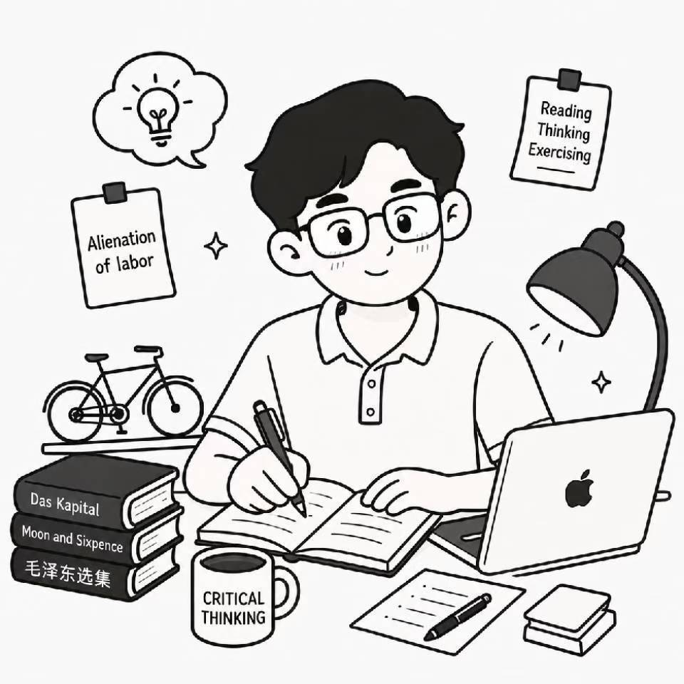

一名热衷于探索极简生产力工具的全栈开发者。这里记录了我日常开发和积累的实用小工具，希望能帮你提升工作与学习效率。
即点即用，支持在线预览或独立打开
符合国家标准党政机关公文格式，支持智能识别上传 DOCX/PDF/TXT 并一键转导出 PDF。
支持 NCM、QMC 等加密音频格式的纯前端本地快速解锁与还原。
全功能 PDF 在线处理工具，支持合并、拆分、转码与本地加密处理。
提供 Meta 标签检测、关键词密度与网页 Search Engine 结构优化建议。
支持本地题库刷题与 GitHub 云端同步功能，便于日常复习与背题。
强密码生成器与本地加密存储工具，保障账号资产与数据安全。
快捷上传图片并即时生成 Markdown、HTML 和 Direct URL 链接。
网页端高效音频处理与剪辑工具。
集图片编辑、画面微调、格式转换与二维码生成功能于一体，上传图片后即可处理并导出。
网页端智能证件照裁剪、更换底色与标准尺寸生成工具。
逐行比较两份文字，高亮新增与删除内容。
美化、压缩并校验 JSON 语法，方便开发调试。
Base64、URL、SHA-256、时间戳、UUID 与随机密码。
实时预览文章，保存本地草稿并导出 Markdown。
记录支出、设置月度预算，追踪会员订阅费用。
颜色转换、渐变 CSS 生成与图片主色提取。
按行批量生成二维码，支持自定义颜色与 PNG 下载。
生成 favicon、Apple Touch Icon 和常见尺寸 PNG。